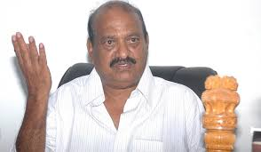
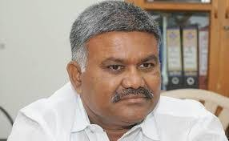
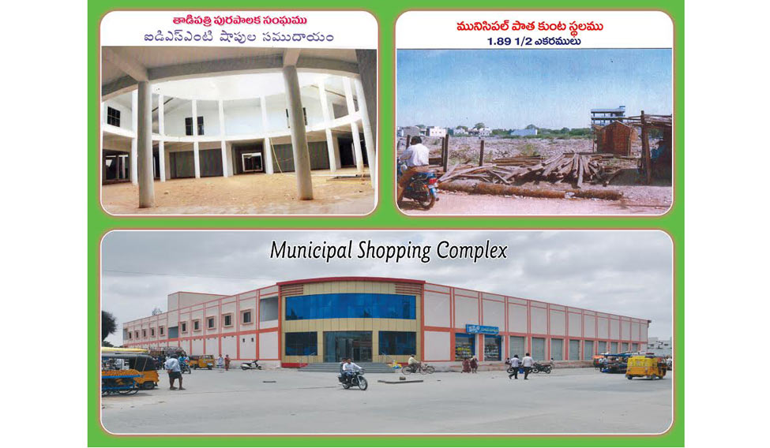

Tadipatri municipality is one of the best in all over INDIA.
It had recieved swaccha bharat award twice national wide.
FORMER MLA of Tadipatri is J.C.Prabhakar Reddy.

He is the brother ofJ. C. Diwakar Reddy, who won six times as MLA from Tadipatri, before contesting as MP from Anantapur, leaving MLA seat to his brother in 2014 assembly elections.
This town boasts of wide cement roads, greenery, a spacious community hall, a vegetable market complex, drainage water treatment plant, multiplexes, new municipal building and several others.
This is the only town with an underground drainage in the whole of Anantapur district.
MLA from 2019 is
Kethireddy Pedda Reddy garu.

AWARDS AND ACHIEVMENTS:
TADIPATRI MUNICIPALITY HAS WON NO.1 MUNICIPALITY SWACHHCA BHARATH AWARD!
"CLEANEST RELIGIOUS TOWN" Award at the India Today Safaigiri and Summit Awards 2015 by India Today Group.
"BEST HERITAGE CITY" Award at the National Tourism Awards 2012 - 2013 by Ministry of Tourism, Government of India.
"BEST MUNICIPAL CORPORATION" Award by Swacch Andhra Corporation, Government of Andhra Pradesh.
"Open Defecation Free City" by Quality Council of India on 2-10-2016.
"SKOCH Platinum " Award at 46th SKOCH Technologies for Growth Awards 2016.
"Transformation of Municipal Schools to Municipal e-Schools" First Prize at Business World SMART Cities Awards 2016.
"SMART Water Management Syatem"Second Prize at Business World SMART Cities Awards 2016.
TADIPATRI VEGETABLE MARKET

the biggest vegetable market in rayalaseema(ANDHRA PRADESH).
.jpg)
.jpg)
.jpg)
.jpg)
.jpg)